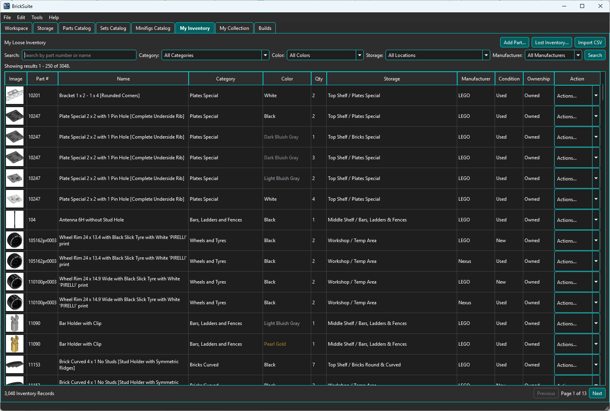
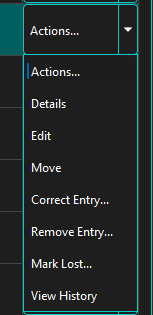
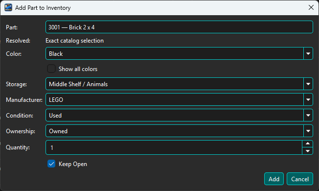
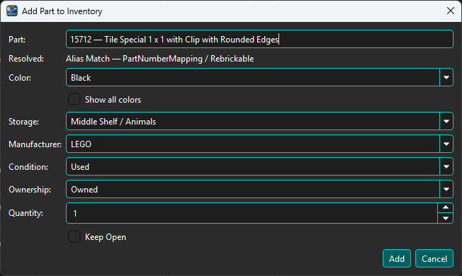
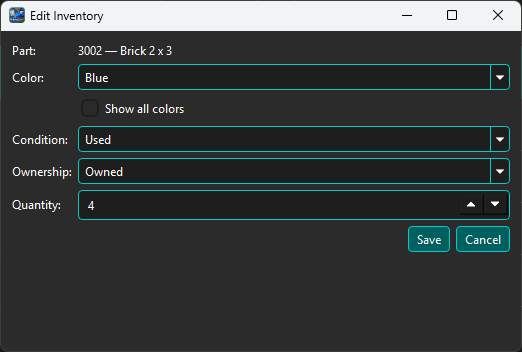
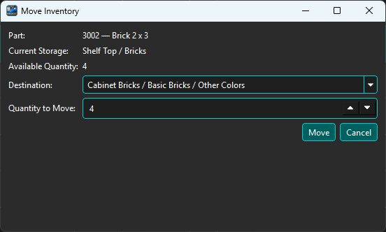
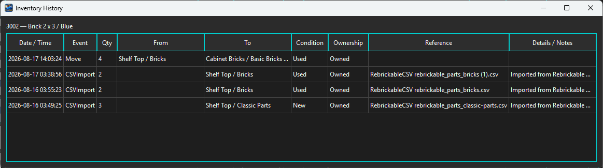

My Inventory is the working view of the loose parts you own and can use. Unlike the Parts Catalog, which describes part designs, My Inventory records the actual part/color combinations in your Workspace, their quantities, Storage locations, manufacturer, condition, and ownership.

Use the Search field to find inventory by part number or name. The Category, Color, Storage, and Manufacturer filters can be used independently or together to narrow the results. Choose Search after selecting the criteria you want to apply.
The inventory table shows the part image, part number, name, category, color, quantity, Storage location, Manufacturer, Condition, Ownership, and an Actions... control.
The message above the table identifies the currently displayed result range. The summary below the table shows the number of inventory records matching the current criteria, while the pager at the lower right moves through larger result sets.
Open a row's Actions... control to work with that inventory record.

The current actions are:
Choose Add Part... when you want to add loose pieces directly from My Inventory. Begin by entering or selecting the part in the Part field. BrickSuite's Part Resolver interprets the entry and shows the result on the Resolved line before the inventory is added.

For example, when the entered part matches a catalog part directly, the resolver reports Exact catalog selection. This gives you a visible confirmation of the part identity before you choose the remaining inventory attributes.
After the part is resolved, select the Color, Storage location, Manufacturer, Condition, Ownership, and Quantity. The Show all colors option makes the complete color list available when the normal known colors for the selected part do not include the color you need. Keep Open is useful when entering several parts in succession.
During the current BrickSuite session, a successfully used Storage destination becomes the default for later inventory-placement dialogs in that workspace. A specific valid My Inventory Storage filter takes precedence when opening Add Part. This convenience resets when BrickSuite exits.
You can also begin this workflow from Parts Catalog by choosing Add to Inventory for a catalog part.
The Part Resolver helps BrickSuite identify the part you mean even when the number you have is not the catalog identity BrickSuite ultimately uses. This is especially useful when working with older LEGO parts whose molded or historical part number has been superseded, aliased, or otherwise mapped to another part number.
As you enter or select a part in the Add Part dialog, BrickSuite evaluates the identity and reports the result on the Resolved line. A direct current-catalog match is reported as an exact catalog selection. When BrickSuite recognizes another supported identity, the resolver can follow its mapping data and identify the corresponding catalog part.

In the example above, BrickSuite reports Alias Match — PartNumberMapping / Rebrickable. This tells you that the entered/selected identity was resolved through BrickSuite's part-number mapping data rather than being treated as an unrelated new part.
The resolver uses BrickSuite's available part identity and relationship data. This is one
reason the part_relationships.csv setup step is important. Keeping the Parts Catalog
and relationship data current gives BrickSuite more information to use when interpreting older,
alternate, or related part numbers.
The resolution is deliberately visible before you add the inventory. Check the Resolved line whenever BrickSuite reports an alias or relationship-based match so you can confirm that the identified part is the one you intend to inventory. After confirming the resolution, choose the remaining Color, Storage, Manufacturer, Condition, Ownership, and Quantity values normally.
Choose Edit from the row's Actions menu when you need to maintain the inventory attributes or quantity.

Choose Move when pieces are physically relocated. BrickSuite shows the current Storage location and available quantity, then asks for the destination and the number of pieces to move.

You do not have to move the entire available quantity. Enter a smaller quantity to perform a partial move. BrickSuite keeps the remaining pieces in the source record and transfers the selected quantity to the destination as appropriate.
After a successful move, its destination becomes the session default for later inventory placement in the same workspace. Cancelled or unsuccessful operations do not change it.
Choose View History to see how a selected part/color inventory has changed over time. History is useful for answering questions such as where pieces came from, when they were imported, and where they were moved.

History can record the date and time, event type, quantity, source and destination, condition, ownership, reference, and details or notes. References such as a Rebrickable CSV filename make imported inventory traceable to the operation that created it.
The Manufacturer column and filter help distinguish LEGO inventory from supported non-LEGO or otherwise identified inventory. BrickSuite keeps manufacturer/provenance information as part of the inventory identity so different sources are not silently treated as the same physical stock.
When importing or resolving provider data, BrickSuite uses its current identity and mapping information to maintain that distinction. If a manufacturer value is important to your workflow, verify it in My Inventory after the related import or resolution operation.
Choose Import CSV to work with an owned-parts or parts-list CSV exported from Rebrickable. BrickSuite supports Append, Replace, Subtract, and Compare Only operations, all of which are previewed before any changes are committed.
See Rebrickable Import for the complete workflow, including comparison and reconciliation exports.
If pieces that BrickSuite expects to be in inventory cannot be physically located, use Lost Inventory... or Mark Lost rather than deleting or artificially adjusting the record. The Lost/Found workflow preserves what happened and supports returning a piece when it is found later.
See Lost / Found for details.
Build workflows can allocate, pull, return, or otherwise change the availability of loose inventory. Complete Set Builds can also release spare pieces to My Loose Inventory and, when disassembled, return selected Set pieces to chosen Storage locations. BrickSuite keeps those operations connected to the Build workflow so the current inventory state remains traceable.
See Builds, Allocate Available, and Missing Parts for the Build side of inventory management.
Storage | Parts Catalog | Rebrickable Import | Lost / Found | Builds